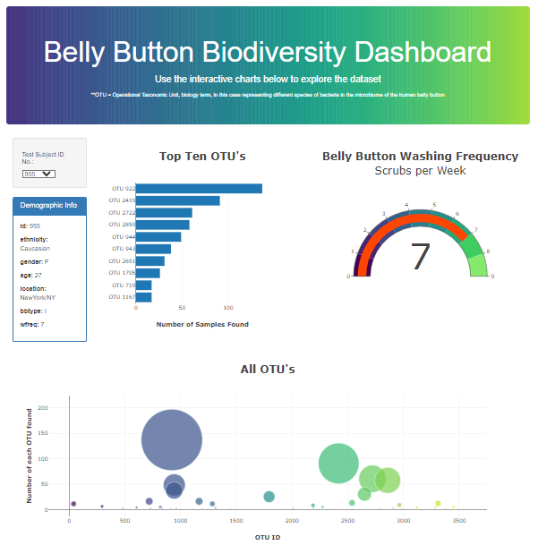
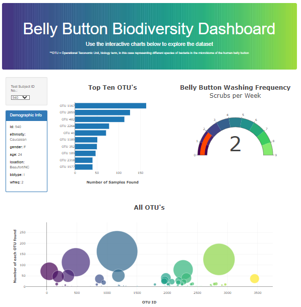

This project features an interactive JavaScript dashboard that visualizes microbial diversity in human belly buttons using Plotly.js, D3.js, and Bootstrap. Key elements include bar, bubble, and gauge charts, making complex biological data engaging and accessible.
Project Links
Project Overview
This project focused on developing an interactive dashboard to visualize microbial diversity using the Belly Button Biodiversity dataset, a project of NC State University that inspires scientific curiosity and discussion about the beneficial role of microbes in our daily lives. The goal was to create a platform where users could explore the microbial species (OTUs) found in human belly buttons through an intuitive interface. The project utilized Plotly.js, D3.js, and Bootstrap to deliver interactive and visually appealing data insights.
Key features of the dashboard include bar charts representing the top 10 OTUs for each subject, bubble charts visualizing the distribution and abundance of microbial species, and a gauge chart that tracks belly button washing frequency. This project highlights my technical ability to integrate web design and interactive data visualizations, making complex biological data approachable and informative.
Gallery
 Belly Button Dashboard Plots
 Another Belly Button Dashboard View
References
Dataset from the Belly Button Biodiversity Project.